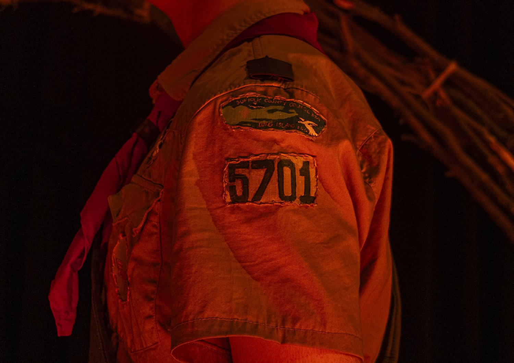
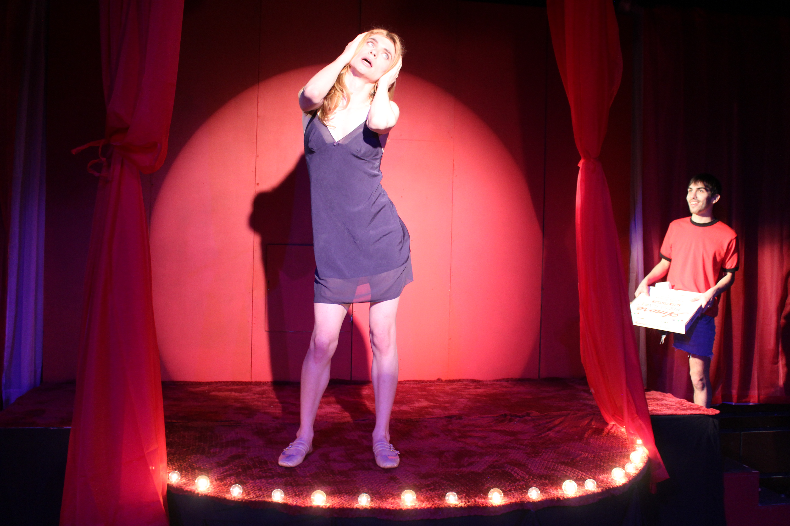

Ryann Lynn Murphy
Freelance creative producer, writer, and editor. New York.
Three produced plays. BA Theatre, Fordham. Incoming NYU ITP.

Plays: Scouts, Thoughts on Girlcock, Grooming My Ass.


2026 · New York
Freelance creative producer, writer, and editor. New York.
Three produced plays. BA Theatre, Fordham. Incoming NYU ITP.
Plays: Scouts, Thoughts on Girlcock, Grooming My Ass.


2026 · New York